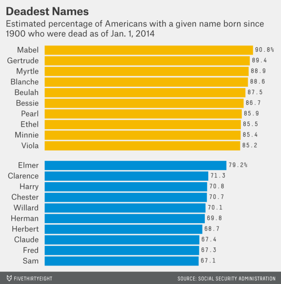

ggplot2(Tuesday, 2019-10-22)
Intro
This is an R lab project from Data Science 1 of the master’s program in biostats and data science at Weill Cornell, taught by Dr. Elizabeth Sweeney. This tutorial is created for beginner R users with basic knowledge of R Studio IDE, data types, and visualization. Please refer to R Documentation if you’re uncertain of any functions. Google search results (particularly StackOverflow is also your friend.)
Goal
In 1.5 hours, we’d like to reproduce one of the plots, Deadest Names, published on FiveThirtyEight. You may find the original prompt here.
Original plot

R Duplicate using ggplot2
Step 1. Data Prep
First, we load a library, mdsr, using library(). Remember to install the package using install.packages("mdsr") if the package is not in your R library. You may need to do this installation only once. Do the same to load tidyverse (we’ll use dplyr and ggplot2 mapped in tidyverse). Note that in a code chunk, pond sign # leads a comment line (R will not execute).
We will then assign a data table BabynamesDist from the function make_babynames_dist().
# load R package "mdsr"
library(mdsr)
library(tidyverse)
# Create our data table
BabynamesDist <- make_babynames_dist()Once you load the data, take a look at what it is like. We’ll use glimpse() from the package dlpyr and summary() from base R. Pay attention to the data class in each column. How many rows and columns are there?
glimpse(BabynamesDist)## Observations: 1,639,722
## Variables: 9
## $ year <dbl> 1900, 1900, 1900, 1900, 1900, 1900, 1900, 1900...
## $ sex <chr> "F", "F", "F", "F", "F", "F", "F", "F", "F", "...
## $ name <chr> "Mary", "Helen", "Anna", "Margaret", "Ruth", "...
## $ n <int> 16706, 6343, 6114, 5304, 4765, 4096, 3920, 389...
## $ prop <dbl> 0.05257559, 0.01996211, 0.01924142, 0.01669226...
## $ alive_prob <dbl> 0, 0, 0, 0, 0, 0, 0, 0, 0, 0, 0, 0, 0, 0, 0, 0...
## $ count_thousands <dbl> 16.706, 6.343, 6.114, 5.304, 4.765, 4.096, 3.9...
## $ age_today <dbl> 114, 114, 114, 114, 114, 114, 114, 114, 114, 1...
## $ est_alive_today <dbl> 0, 0, 0, 0, 0, 0, 0, 0, 0, 0, 0, 0, 0, 0, 0, 0...summary(BabynamesDist)## year sex name n
## Min. :1900 Length:1639722 Length:1639722 Min. : 5.0
## 1st Qu.:1950 Class :character Class :character 1st Qu.: 7.0
## Median :1980 Mode :character Mode :character Median : 12.0
## Mean :1972 Mean : 193.2
## 3rd Qu.:1998 3rd Qu.: 32.0
## Max. :2010 Max. :99686.0
## prop alive_prob count_thousands age_today
## Min. :2.260e-06 Min. :0.0000 Min. : 0.0050 Min. : 4.00
## 1st Qu.:3.880e-06 1st Qu.:0.8065 1st Qu.: 0.0070 1st Qu.: 16.00
## Median :7.200e-06 Median :0.9678 Median : 0.0120 Median : 34.00
## Mean :1.293e-04 Mean :0.8052 Mean : 0.1932 Mean : 42.01
## 3rd Qu.:2.095e-05 3rd Qu.:0.9891 3rd Qu.: 0.0320 3rd Qu.: 64.00
## Max. :6.062e-02 Max. :0.9943 Max. :99.6860 Max. :114.00
## est_alive_today
## Min. : 0.00
## 1st Qu.: 4.97
## Median : 8.93
## Mean : 150.91
## 3rd Qu.: 24.48
## Max. :80399.05Step 2. Get top 10 names for females and males respectively.